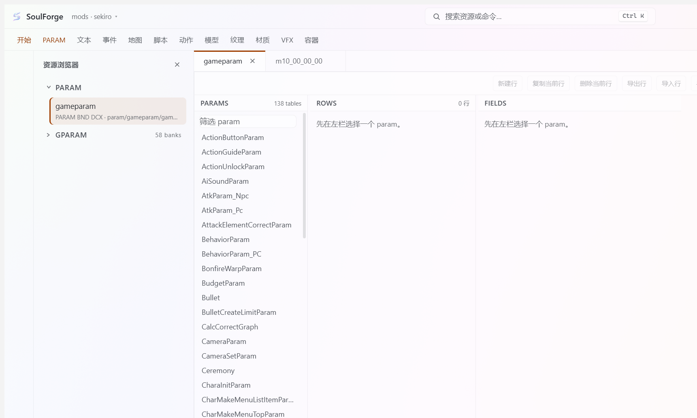
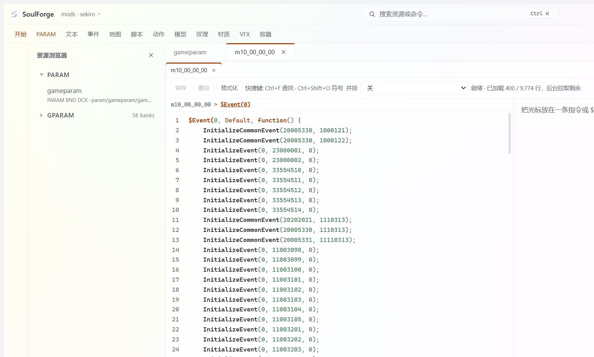

01 / CONTEXT
上下文被工具切断
解包、查找、编辑、打包分别发生在不同工具中。用户的目标、当前对象和上一轮结果无法自然传递。
SoulForge AI Mod 工作台
面向复杂游戏 Mod 的 AI Agent 编辑工具：把用户目标，连接到真实对象、跨文件关系、修改路径与受控写入。

解包、查找、编辑、打包分别发生在不同工具中。用户的目标、当前对象和上一轮结果无法自然传递。
一个看似简单的改动，可能同时涉及参数表、物品文本、地图和事件多文件联动，学习门槛较高。
成熟工具仍以较早期的编辑器交互为主；对工作效率提升有限，且学习门槛较高。
每一阶段都有输入、工具、状态和下一步；关系闭合、Evidence 与用户确认是进入写入的关键门槛。
目标对象
修改意图
文本、参数
物品、事件
ID、引用
影响范围
原生读取
当前值与来源
参数、掉落
或事件路径
格式化 Evidence
关联边
用户确认
受控写入
写后重读
记录或回退
修改鬼刑部：从 BOSS 改为精英怪，掉落物品增加一个靛蓝星陨，红点数改为 2。
目标候选：名称可能存在误写，需要搜索确认真实对象与 ID。
目标候选：可能是原创忍具，需要区分卷轴、本体与奖励入口。
语义候选：“红点”不是字段名，要结合参数、文本与项目知识解释。
把“鬼型部”误写成“鬼刑部”。Agent 不能把错误名称直接当作另一个对象，也不能擅自改写用户真实目标。
“红点数改为 2”不是天然明确的字段名。模型需要结合参数说明、项目文本、历史对话和开发记忆，保留候选解释。
“靛蓝星陨”不是只狼原版知识，而是 Mod《孑影长荫》中的原创忍具，需要从项目自身知识中找到它。
确认鬼型部的当前参数与身份。
无直接掉落字段，不代表链路结束。
从角色到 m11 / m13 地图实体，再进入事件文件。
判断奖励、血条和演出是否由事件承载。
卷轴和本体是两个对象，不能混用。
全部关联对象完成读取，才进入修改方案。

默认采用 lexical + 结构化检索，而不是依赖 embedding / RAG。面向真实 Mod 用户；ID、名称、字段、参数表等对象高度结构化，关键词和结构化检索本身就有很强价值。
主动配置 embedding 后，提高搜索效率；工程实现保留 Embedding + RRF 混合召回作为配置增强。
Evidence 是 Agent 根据工具搜索结果编写的格式化文本文件：既记录待写对象，也记录已确认的关系边。
# Evidence ## Target - 鬼型部 - 靛蓝星陨 ## Evidence entries - npcparam（3）：NpcParam 50800000；ninsatuNum 当前为 3。 - msb（1）：c5080 → m11 / m13 地图实体，关联对象已原生读取。 - emevd（1）：m11_00_00_00.emevd.dcx 中的关联事件已确认。 - itemlot / equipparam_goods（1）：奖励入口与 Goods 5970 的关系已原生确认。